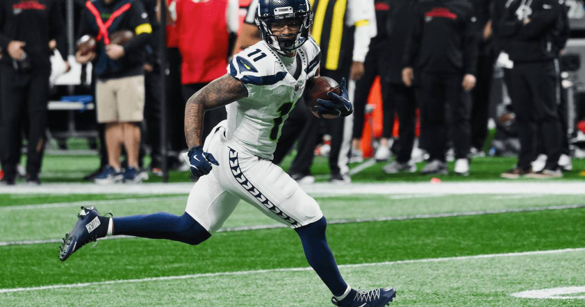

Broncos rule out Surtain, Hufanga for Seahawks TNF
Denver ruled out Pat Surtain II and Talanoa Hufanga with ankle injuries for Thursday night against Seattle — leaving the league's best receiver to face their replacements.

Disclosure: this post contains affiliate links. I earn a commission on qualifying purchases.
The Broncos' secondary is running on fumes at exactly the wrong time. Denver has officially ruled out Pat Surtain II and Talanoa Hufanga with ankle injuries for tonight's Thursday Night Football game against Seattle — meaning the league's most dangerous wide receiver gets to spend the evening lined up against backups.
The matchup problem
This is the story of the game in one sentence: Jaxon Smith-Njigba — four 100-yard games in five weeks and a league-high seven receiving touchdowns — now draws replacement defenders instead of the 2024 Defensive Player of the Year.
Surtain has been the lid on Denver's secondary for years. Without him, Seattle's passing game — which already runs almost entirely through JSN — gets its toughest coverage assignment deleted from the game plan. Hufanga's absence compounds it: one starter gone from the boundary and one from the back end, on a short week, against a quarterback who knows exactly where his best player is.
What Denver has to do instead
With both starters out, the Broncos' remaining defensive backs get no margin for error. Denver's pass rush becomes the real coverage — if the front can't hurry Sam Darnold, the depleted secondary is going to be asked to hold up against JSN for three-plus seconds at a time, and that's a losing proposition. Expect Denver to lean on zone looks to keep a shell over the top rather than asking a backup corner to go man-to-man with the league's most productive receiver.
Why this game matters
Both teams come in at 3-2, and Thursday night games in Denver are always about who handles the altitude and the noise. Seattle was flagged in the unit as needing to protect the football, while Denver is still finding its offensive rhythm under a new play-calling setup. But the clearest edge on the board tonight is on the outside: an All-World receiver against a secondary missing its two best players.
Sources: Broncos injury report — Surtain, Hufanga ruled out, JSN must take advantage of Surtain's absence.
Watch
Source: Seahawks at Broncos Thursday Night Football Preview | NFL Week 6 Picks & Predictions — CBS Sports HQ (YouTube). Ryan Wilson and John Breech preview tonight's matchup: Sean Payton taking over playcalling, the run-game comparison, Seattle's turnover problem, and their prediction for the game.
Gear up: [Fanatics](https://fanatics.93n6tx.net/WOLjqe) via Fanatics